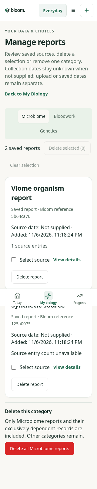
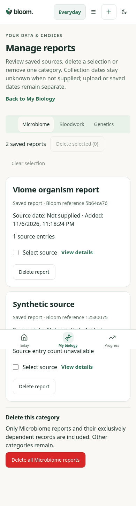
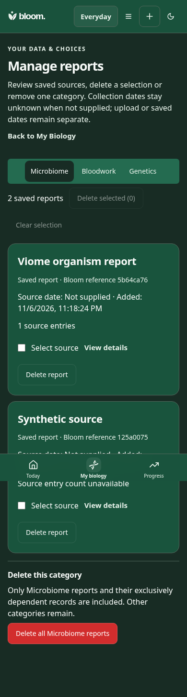
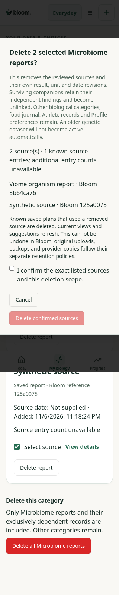
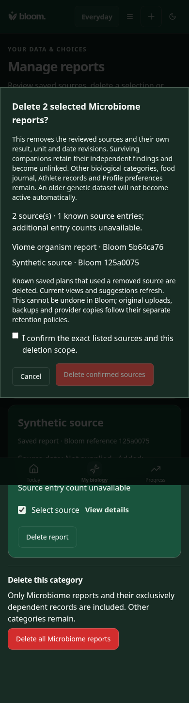

Baseline: 182daff. This route did not exist before; existing detailed report controls are preserved. Biology and Profile privacy now lead to this single screen. Synthetic sources only; no independent Design or physical VoiceOver acceptance claimed.
Review points: (1) separate category selection; (2) honest unknown collection date/count, upload timestamp separate; (3) source-level View/Delete and selection; (4) destructive category action separated; (5) exact source count and unknown entries in confirmation; (6) retention and unrelated-data explanation, explicit checkbox, Cancel and disabled confirmation.




